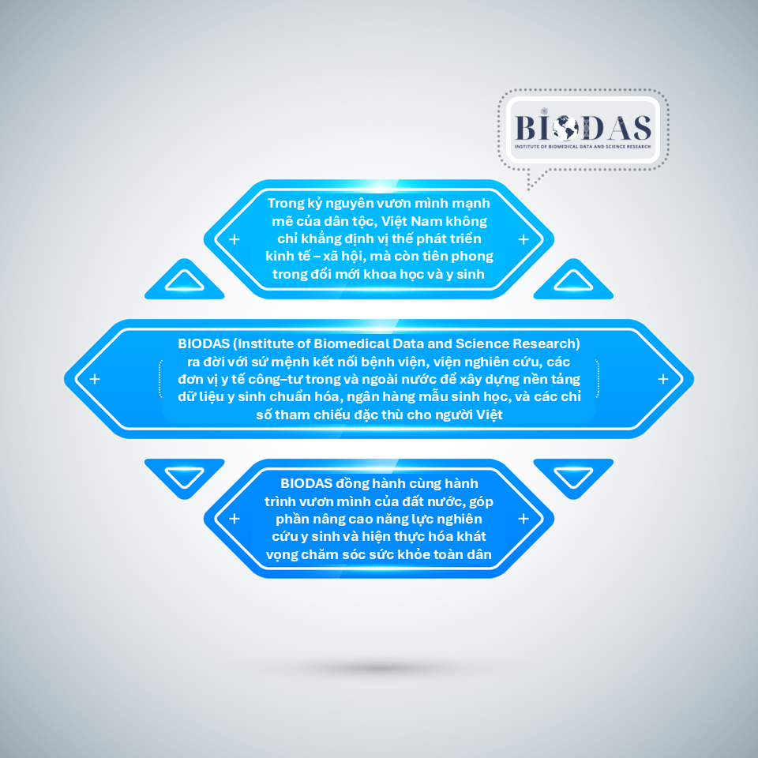

TRỢ LÝ THỰC ĐỊA
(PART-TIME)
Deadline: 30/09/2025
Sep 4, 2025




Biobank không chỉ là nơi lưu trữ mẫu sinh học mà còn là hạ tầng chiến lược phục vụ giám sát y tế công cộng và nghiên cứu khoa học. Trên thế giới, biobank chủ yếu tập trung ở các nước phát triển, trong khi LMIC (các quốc gia thu nhập trung bình và thấp) – bao gồm Việt Nam – còn thiếu hụt. WHO/IARC với mạng lưới BCnet đã khởi xướng hỗ trợ xây dựng biobank tại LMIC. Trong bối cảnh ASEAN tăng trưởng nhanh, mở rộng bảo hiểm y tế và chịu tác động của đại dịch COVID-19, nhu cầu xây dựng biobank tại Việt Nam trở nên cấp thiết.
Đánh giá tính khả thi tập trung vào nhiều khía cạnh: - Hạ tầng và nguồn lực - Khung pháp lý & đạo đức - Tính bền vững - Nhu cầu nghiên cứu & y tế công cộng - Quan hệ đối tác & hợp tác - Tác động kinh tế - xã hội
Kết quả kỳ vọng là một báo cáo (manuscript) mô tả hiện trạng và đưa ra khuyến nghị xây dựng Biobank tại Việt Nam theo hướng: phù hợp văn hóa – xã hội, tuân thủ chuẩn mực đạo đức, và bền vững về tài chính.
🔎 Xem chi tiết Nghiên cứu tính khả thi của ngân hàng sinh học tại Việt Nam